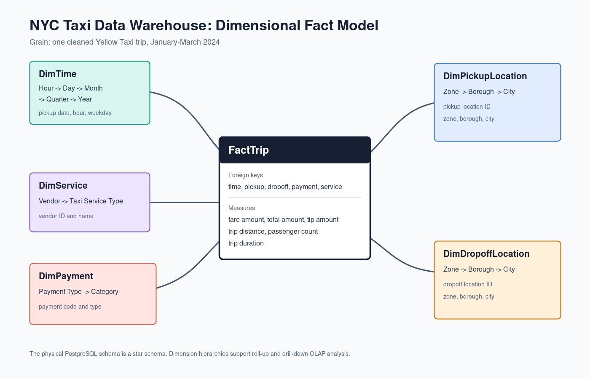
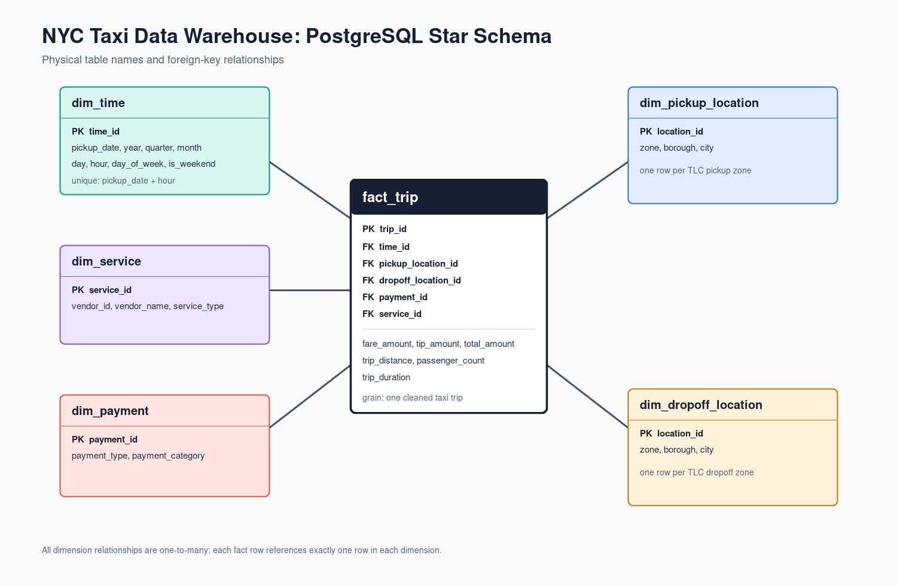
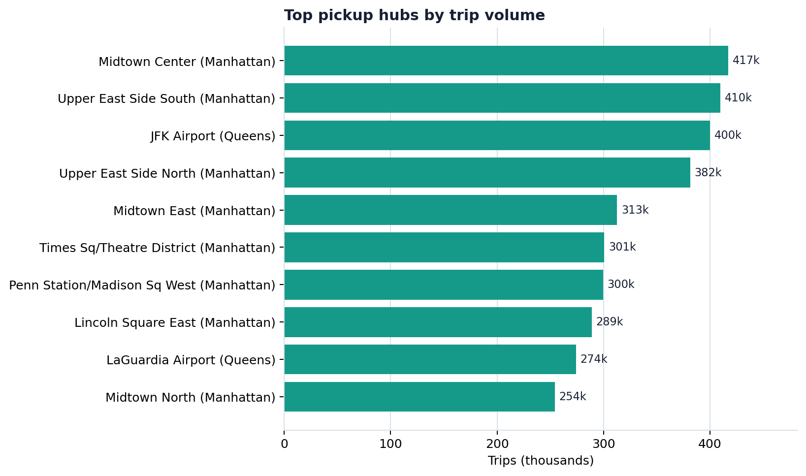
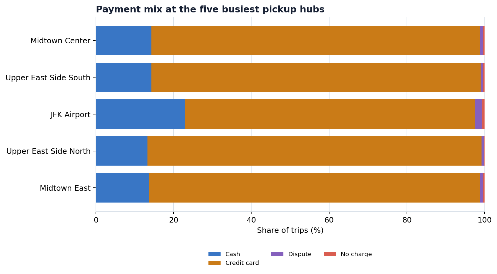
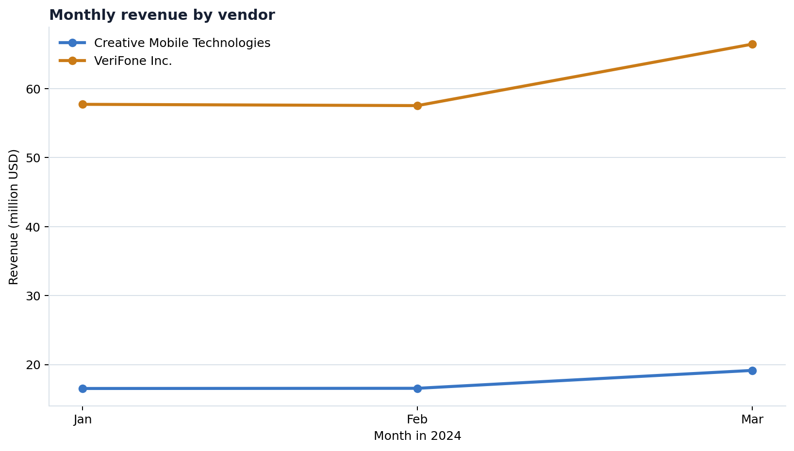
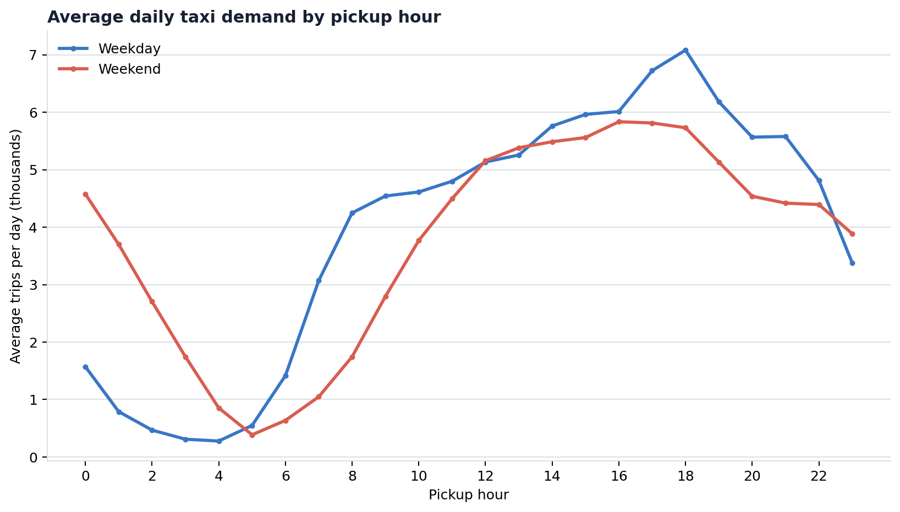
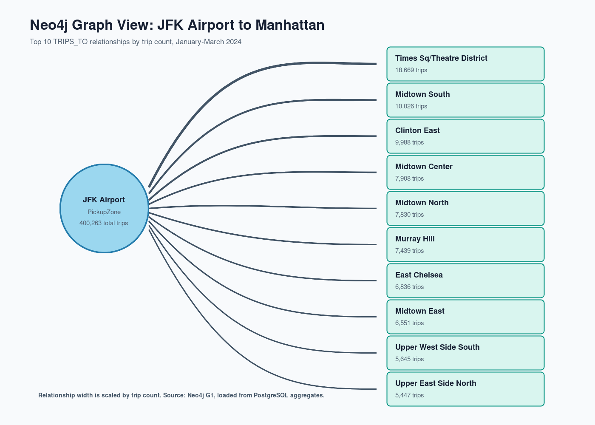

Build
A validated PostgreSQL star schema at one-trip grain.
Final project presentation
A PostgreSQL dimensional warehouse with reproducible OLAP analysis and a Neo4j relationship-exploration layer.
Ermin LilajBorian Llukacaj
The question
We transformed raw operational trip records into a warehouse that supports repeatable questions about demand, revenue, payments, vendors, and movement between city zones.
A validated PostgreSQL star schema at one-trip grain.
Twelve OLAP queries covering roll-up, drill-down, slice, dice, ranking, and windows.
A compact Neo4j graph derived from warehouse aggregates, never raw trip nodes.
Two complementary layers
January–March 2024 Yellow Taxi Parquet records and the official zone lookup.
Cleaning, conformance, dimensional preparation, and bulk fact loading.
The authoritative dimensional warehouse and OLAP query engine.
A derived aggregate graph for route and relationship exploration.
PostgreSQL answers dimensional questions. Neo4j makes the connections visible.
Source and scope
The source combines trip-level operational data with a Taxi Zone Lookup table. The warehouse preserves the information needed for time, geography, payment, service, and revenue analysis.
Study period: January, February, and March 2024.
| Stage | Trips |
|---|---|
| Raw TLC records | 9,554,778 |
| Cleaned and loaded | 8,448,046 |
| Excluded during quality checks | 1,106,732 |
| Retention rate | 88.4% |
Data quality controls
8.45 million cleaned trips form the auditable analytical base.
Dimensions load before facts; constraints and row-count checks verify the star-schema contract after loading.
Dimensional Fact Model
Trip measures include fare, tip, total amount, distance, passenger count, and duration. Five dimensions enable analysis by time, pickup, drop-off, payment, and service.

Physical PostgreSQL model

Analytical query suite
Demand and revenue across hour, day, month, borough, and zone levels.
Focused views across payments, trip length, duration, geography, and vendor.
Top locations, peak periods, and comparative vendor trends.
Each result is SQL-first, exportable, and reproducible from the warehouse.
Reproducibility and validation
Download, clean, dimensional load, OLAP export, graph aggregation, and graph loading are all executable project steps.
Fact and dimension row counts, keys, and constraints verify that loading completed correctly.
Charts are created by Python queries against PostgreSQL rather than manually edited screenshots.
Neo4j aggregates are regenerated from PostgreSQL, preserving an audit path to the source of truth.
Reproducibility is part of the deliverable, not an afterthought.
OLAP finding / Geography

OLAP finding / Payments

OLAP finding / Time and revenue


Neo4j as a derived layer

Design rationale
PostgreSQL retains trip-level facts, conformed dimensions, constraints, and all OLAP responsibility.
The graph receives only aggregates, making route direction and connected-location patterns easy to inspect.
ETL, SQL, graph export/load, figures, diagrams, and report generation are all in the repository.
The study covers one taxi service and three months; it is not presented as a citywide causal model.
PostgreSQL is the source of truth and OLAP engine; Neo4j is the relationship-focused analytical extension.
Conclusion
A complete, validated warehouse; reproducible OLAP findings; and a graph layer that complements rather than replaces dimensional analysis.
Ermin LilajBorian Llukacaj